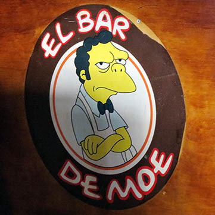

Openbar
Estac.
Show
10/50
Para todos os loucos e bêbados de Duff !!
O bar Moe's é visto em vários episodios e ja é muito famoso no mundo inteiro. La é o lugar onde Homer e seus amigos esquecem de seus problemas. O bar já foi visitado por muitos, até mesmo pelo Aerosmith no episódio joe cuecudo.
Endereço
Avenida Joaquim Leite, 117 - Centro, Barra Mansa / RJ
Telefone
(24) 12345-6789